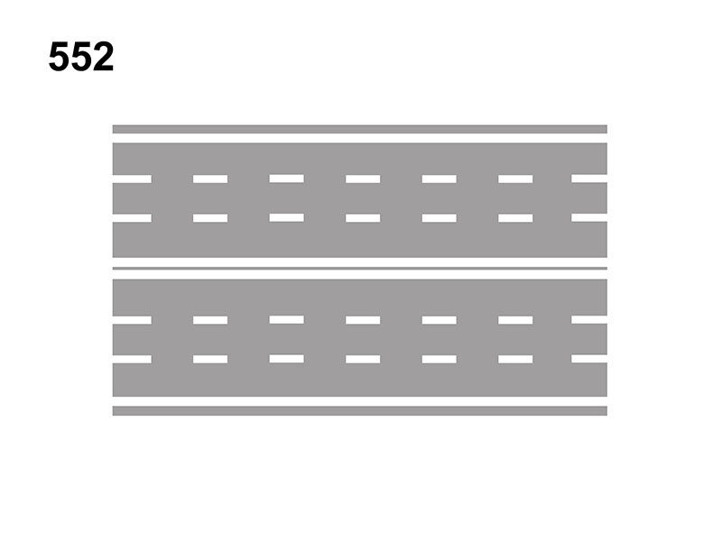

Strada a 3 corsie per senso di marcia

E' una strada composta da 1 carreggiata e 6 corsie (tre corsie per ogni senso di marcia).
La circolazione è a doppio senso di circolazione e di norma per ogni senso di marcia, la corsia di destra è dedicata alla marcia ordinaria, mentre le corsie di centro e di sinistra sono dedicate al sorpasso.
Solo se il traffico è intenso si può viaggiare per file parallele.
Sono vietate la svolta a sinistra, l'inversione di marcia, mentre il sorpasso è consentito anche sui dossi o lungo una curva.
La circolazione è a doppio senso di circolazione e di norma per ogni senso di marcia, la corsia di destra è dedicata alla marcia ordinaria, mentre le corsie di centro e di sinistra sono dedicate al sorpasso.
Solo se il traffico è intenso si può viaggiare per file parallele.
Sono vietate la svolta a sinistra, l'inversione di marcia, mentre il sorpasso è consentito anche sui dossi o lungo una curva.